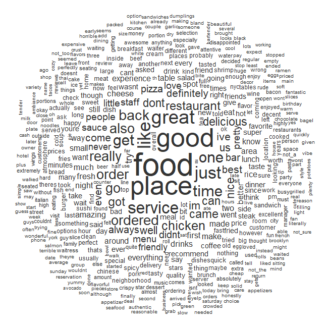

Methodology

Sentiment Analysis
Using the NRC Word-Emotion Lexicon, we applied dictionary matching methods onto Yelp reviews to generate sentiment scores for each restaurant in the dataset. The NRC Word-Emotion Lexicon is a collection of words tagged with positive and negative sentiments as well as the following eight emotions: anger, anticipation, disgust, fear, joy, sadness, surprise, and trust.
Sentiment scores were generated based on the number of tokens belonging to each emotion/sentiment divided by the total number of tokens in the document (i.e. the collection of reviews for a restaurant). These scores were fed into our Random Forest Classifier.
Random Forest Classification
Each row in our dataset consisted of a restaurant's most recent health inspection and individual violation scores from their previous inspection. We also joined descriptive features about cuisine type, price, and ratings from Yelp, as well as the sentiment scores generated from our analysis of Yelp reviews.
Keyword Flagging
In addition to our sentiment scoring, we also flagged for specific health related keywords to include as a feature in our model.
Keywords included adjectives such as "gross" and "disgusting", as well as words for vermin such as "rats" or "cockroaches".